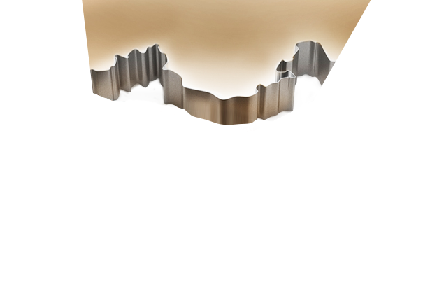

<!doctype html>

<!--
HTML5 Reset: https://github.com/murtaugh/HTML5-Reset
Free to use
-->

<!--[if lt IE 7 ]> <html class="ie ie6 ie-lt10 ie-lt9 ie-lt8 ie-lt7 no-js" lang="en"> <![endif]-->
<!--[if IE 7 ]>    <html class="ie ie7 ie-lt10 ie-lt9 ie-lt8 no-js" lang="en"> <![endif]-->
<!--[if IE 8 ]>    <html class="ie ie8 ie-lt10 ie-lt9 no-js" lang="en"> <![endif]-->
<!--[if IE 9 ]>    <html class="ie ie9 ie-lt10 no-js" lang="en"> <![endif]-->
<!--[if gt IE 9]><!--><html class="no-js" lang="en"><!--<![endif]-->
	<!-- the "no-js" class is for Modernizr. --> 

	<head>

		<meta charset="utf-8">

		<!-- Always force latest IE rendering engine (even in intranet) & Chrome Frame -->
		<meta http-equiv="X-UA-Compatible" content="IE=edge,chrome=1">

		<!-- Important stuff for SEO, don't neglect. (And don't dupicate values across your site!) -->
		<title>跨越中国 平安送你油</title>
		<meta name="author" content="wushuyi" />
		<meta name="description" content="跨越中国 平安送你油" />

		<!-- Who owns the content of this site? -->
		<meta name="Copyright" content="wangfan" />

		<!--  Mobile Viewport
		http://j.mp/mobileviewport & http://davidbcalhoun.com/2010/viewport-metatag
		device-width : Occupy full width of the screen in its current orientation
		initial-scale = 1.0 retains dimensions instead of zooming out if page height > device height
		maximum-scale = 1.0 retains dimensions instead of zooming in if page width < device width (wrong for most sites)
		-->
		<meta name="viewport" content="width=device-width, initial-scale=1">

		<!-- Use Iconifyer to generate all the favicons and touch icons you need: http://iconifier.net -->
		<link rel="shortcut icon" href="favicon.ico" />

		<!-- concatenate and minify for production -->
		<link rel="stylesheet" href="assets/css/reset.css" />
		<link rel="stylesheet" href="assets/css/style.css" />

		<!-- Lea Verou's Prefix Free, lets you use un-prefixed properties in your CSS files -->
		<script src="assets/js/libs/prefixfree.min.js"></script>

		<!-- This is an un-minified, complete version of Modernizr. 
		Before you move to production, you should generate a custom build that only has the detects you need. -->
		<script src="assets/js/libs/modernizr-2.7.1.dev.js"></script>


		<!-- Grab Google CDN's jQuery. fall back to local if necessary -->
		<script src="assets/js/libs/jquery-1.11.0.min.js"></script>
		<script src="assets/js/libs/jquery.easing.1.3.js"></script>


		<!-- this is where we put our custom functions -->
		<!-- don't forget to concatenate and minify if needed -->
		<script src="assets/js/functions.js"></script>
        <script src="assets/js/TweenMax.min.js"></script>

		<!-- Asynchronous google analytics; this is the official snippet.
		Replace UA-XXXXXX-XX with your site's ID and uncomment to enable.

		<script>

			var _gaq = _gaq || [];
			_gaq.push(['_setAccount', 'UA-XXXXXX-XX']);
			_gaq.push(['_trackPageview']);

			(function() {
			 var ga = document.createElement('script'); ga.type = 'text/javascript'; ga.async = true;
			 ga.src = ('https:' == document.location.protocol ? 'https://ssl' : 'http://www') + '.google-analytics.com/ga.js';
			 var s = document.getElementsByTagName('script')[0]; s.parentNode.insertBefore(ga, s);
			 })();

		 </script>
		 -->

		 <!-- Application-specific meta tags -->
		 <!-- Windows 8: see http://msdn.microsoft.com/en-us/library/ie/dn255024%28v=vs.85%29.aspx for details -->
		 <meta name="application-name" content="" /> 
		 <meta name="msapplication-TileColor" content="" /> 
		 <meta name="msapplication-TileImage" content="" />
		 <meta name="msapplication-square150x150logo" content="" />
		 <meta name="msapplication-square310x310logo" content="" />
		 <meta name="msapplication-square70x70logo" content="" />
		 <meta name="msapplication-wide310x150logo" content="" />
		 <!-- Twitter: see https://dev.twitter.com/docs/cards/types/summary-card for details -->
		 <meta name="twitter:card" content="">
		 <meta name="twitter:site" content="">
		 <meta name="twitter:title" content="">
		 <meta name="twitter:description" content="">
		 <meta name="twitter:url" content="">
		 <!-- Facebook (and some others) use the Open Graph protocol: see http://ogp.me/ for details -->
		 <meta property="og:title" content="" />
		 <meta property="og:description" content="" />
		 <meta property="og:url" content="" />
		 <meta property="og:image" content="" />

	 </head>

	 <body onload="init();">

<script src="http://code.createjs.com/easeljs-0.6.0.min.js"></script>
<script src="http://code.createjs.com/tweenjs-0.4.0.min.js"></script>
<script src="http://code.createjs.com/movieclip-0.6.0.min.js"></script>
<script src="http://code.createjs.com/preloadjs-0.3.0.min.js"></script>
<script src="zhuquan1.js"></script>

<script>
var canvas, stage, exportRoot;

function init() {
	createjs.MotionGuidePlugin.install();

	canvas = document.getElementById("canvas");
	images = images||{};

	var manifest = [
		{src:"images/bg2.jpg", id:"bg2"},
		{src:"images/zhuquan_b.png", id:"zhuquan_b"},
		{src:"images/zhuquan_bianyan.png", id:"zhuquan_bianyan"},
		{src:"images/zhuquan_dian.png", id:"zhuquan_dian"}
	];

	var loader = new createjs.LoadQueue(false);
	loader.addEventListener("fileload", handleFileLoad);
	loader.addEventListener("complete", handleComplete);
	loader.loadManifest(manifest);
}

function handleFileLoad(evt) {
	if (evt.item.type == "image") { images[evt.item.id] = evt.result; }
}

function handleComplete() {
	exportRoot = new lib.zhuquan1();

	stage = new createjs.Stage(canvas);
	stage.addChild(exportRoot);
	stage.update();

	createjs.Ticker.setFPS(30);
	createjs.Ticker.addEventListener("tick", stage);
}
</script>

</head>


	


		 <div class="wrapper"><!-- not needed? up to you: http://camendesign.com/code/developpeurs_sans_frontieres -->
			 <div class="top_nav">
				 <a class="top_link_1" target="_blank" href="http://creditcard.pingan.com/youhuihuodong/jiayouyouhui/index.shtml"></a>
				 <a class="top_link_2" target="_blank" href="http://www.4008000000.com/zaixiangoumai/chexian/chexian.shtml?WT.mc_id=C03-PA-PAYH-JY140429"></a>
				 <a class="top_link_3" target="_blank" href="./assets/images/top_qrcode.png" title="太小扫不到? 点击我吧!">
					 <div class="top_qrcode">
						 
					 </div>
				 </a>
			 </div>
			 <div class="title"></div>
				
			 <div id="line" class="line_box">
				 <div class="line line_1"></div>
				 <div class="icon icon_1">
					 <div class="icon_top">
						 
					 </div>
					 <div class="icon_buttom">
						 
					 </div>
				 </div>
				 <div class="line line_2"></div>
				 <div class="icon icon_2">
					 <div class="icon_top">
						 
					 </div>
					 <div class="icon_buttom">
						 
					 </div>
				 </div>
				 <div class="line line_3"></div>
				 <div class="icon icon_3">
					 <div class="icon_top">
						 
					 </div>
					 <div class="icon_buttom">
						 
					 </div>
				 </div>
				 <div class="line line_4"></div>
				 <div class="icon icon_4">
					 <div class="icon_top">
						 
					 </div>
					 <div class="icon_buttom">
						 
					 </div>
				 </div>
				 <div class="icon icon_5">
					 <div class="icon_top">
						 
					 </div>
					 <div class="icon_buttom">
						 
					 </div>
				 </div>
			 </div>
			 <div class="map">
             <canvas id="canvas" width="615" height="420"></canvas>
				 <!--div class="map_bg"></div>
				 <div class="map_bg3" style="position:absolute; z-index:0;"></div>
				 <div class="map_oil" style="opacity:0.7; filter:alpha(opacity:70)">
                 	
					 
                 	<div id="bian2"></div>
				 </div-->
                
			 </div>
			 <div class="footer">
				 <div class="select_left">
					 <span class="auto_city_1">进入您所在的城市:</span>
					 <div class="select_1">
						 等待定位...
					 </div>
				 </div>
				 <div class="iconoil"></div>
				 <div class="select_right">
					 <div class="city_list"></div>
					 <span class="auto_city_2">切换城市:</span>
					 <div class="select_2">
						 点击切换城市
					 </div>
				 </div>
			 </div>
		 </div>


	 </body>
 </html>
